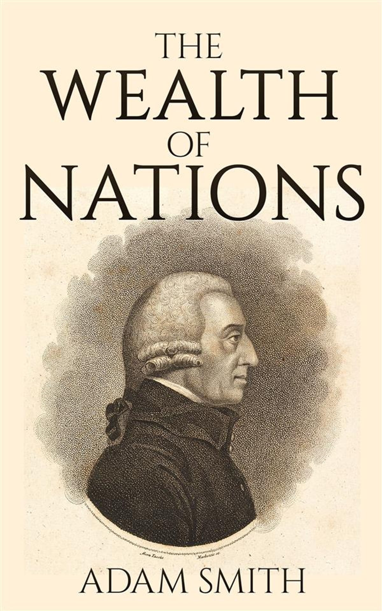

Manusia telah berkegiatan ekonomi semenjak mereka lahir hingga membentuk peradaban modern seperti sekarang.
Manusia bertahan hidup dengan cara memenuhi kebutuhannya. Namun kebutuhan manusia cenderung tidak terbatas sementara ketersediaan sumber daya yang dapat dimanfaatkan semakin langka
Perkembangan Ilmu ekonomi ditandai dengan buku yang dikeluarkan oleh seorang filsuf berkebangsaan skotlandia, Adam Smith yang membahas ilmu ekonomi secara sistematik dan holistik.
Adam smith menjelaskan beberapa pandangan tentang ilmu ekonomi menjadi cikal bakal ilmu ekonomi sebagai cabang ilmu yang berdiri sendiri, Dia dikenal sebagai Bapak Ilmu Ekonomi
Salah satu gagasan Adam Smith yang paling dan terkenal adalah teori "INVISIBLE HAND" yaitu tanpa adanya campur tangan pemerintah, dimana mekanisme pasar akan menjadi alat alokasi sumber daya yang efisien.
Prinsip ini menolak campur tangan pemerintah, karena justru akan menganggu mekanisme pasar itu sendiri. prinsip ini juga sering dikenal dengan laissez=faire (let it be). Konsep ini berkembang pesat dan klimaksnya adalah munculnya revolusi Industri
Berburu dan Meramu >>> Bercocok Tanam dan Beternak >>> Periode ini terciptalah system barter >>> Periode Sistem perdagangan menemukan satuan alat hitung (Uang)
Barter>>>Uang Barang (Comodity Money)>>>Uang Logam(Metalic Money)>>>Uang Kertas dan Uang Logam
Ilmu Ekonomi dapat diartikan sebagai ilmu yang mempelajari cara manusia memenuhi Kebutuhan yang tidak terbatas dengan Sumber daya yang terbatas(Sukirno,2019)
Kelahiran ilmu ekonomi didorong oleh adanya Kelangkaan kelangkaan menimbulkan pilihan pilihan yang harus diputuskan oleh manusia di tengah Keterbatasan Sumber daya
Sesuatu yang Harus dipenuhi oleh seseorang untuk bertahan hidup layak dan kenaikan taraf hidupnya.
Sesuatu yang Tidak harus dipenuhi oleh seseorang, tanpa hal tersebut sebenarnya ia masih dapat hidup layak
adalah kebutuhan utama untuk mempertahankan kelangsungan hidup manusia. contoh: Sandang, Pangan, Papan
Yaitu kebutuhan yang baru boleh terpenuhi setelah kebutuhan primer. Contohnya ketika orang tua mu membeli alat masak, lemari, sepatu, dan lain lainnya
disebut juga dengan kebutuhan mewah dan tertuju untuk orang orang berpenghasilan tinggi. Contohnya perhiasan atau mobil.
yang jumlahnya lebih sedikit dari kebutuhan manusia dan untuk memperolehnya diperlukan pengorbanan. Misalnya, Ibu shabrina membeli 10kg beras di toko koh atong dan harus membayar Rp105.000. Maka, uang yang dikeluarkan oleh ibu shabrina dianggap sebagai bentuk pengorbanan untuk mendapatkan beras.
Atau disebut juga dengan benda non ekonomi yang jumlahnya melimpah, sehingga untuk mendapatkannya tidak perlu pengorbanan/tanpa biaya. misalnya, cahaya matahari dan udara
Jumlahnya sangat melimpah hingga cenderung dapat merugikan manusia, Contohnya, menggunakan tampungan air hujan untuk mencuci motor, jika tidak maka parit di depan rumahku akan mengalami banjir
adalah benda siap pakai tanpa harus melalui proses olah terlebih dahulu. Misalnya sepatu, pakaian, atau tas.
yang digunakan untuk menghasilkan benda yang lain, contohnya mesin dan alat baku
adalah bahan yang belum mengalami proses pengolahan. Bahan mentah disebut juga bahan baku, contohnya adalah minyak bumi, tembakau, atau rotan.
Yaitu bahan yang sudah diolah tapi belum menjadi produk akhir. contohnya, benang yang akan diolah menjadi kain
merupakan barang siap konsumsi seperti selimut, sendok, atau piring
yang akan berguna jika kedua benda dipakai secara bersamaan sehingga menghasilkan manfaat. apabila hanya mengandalkan satu benda saja, maka tidak akan dapat digunakan. Misalnya, motor dan bensin
yang fungsinya dapat menggantikan peran benda lain. Contohnya penggunaan komputer mampu menggantikan peran mesin tik.
dapat dipindahtempatkan serta bisa digunakan sebagai jaminan kredit jangka pendek(1 tahun). Misalnya, radio atau televisi.
tidak dapat dipindahkan, namun bisa dipakai sebagai jaminan kredit jangka panjang. Contohnya, lahan atau gedung perkantoran.
 KUREAL
KUREAL